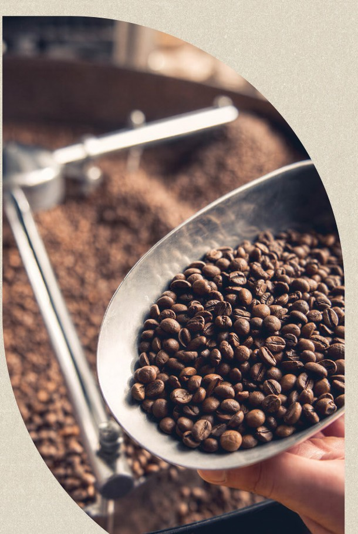

Da escolha do blend ao produto final, cuidamos de cada etapa para que sua marca entregue um café com qualidade, padrão e identidade.
Oferecemos soluções completas em terceirização de café, assumindo toda a operação necessária para transformar o café escolhido em um produto pronto para chegar ao consumidor final.
Somos responsáveis por torra, moagem e empacotamento, além do desenvolvimento de blends personalizados, buscando o perfil sensorial ideal de acordo com o público e o posicionamento da sua marca.
Nosso trabalho vai além da produção. Garantimos padronização e controle em todas as etapas, para que cada lote mantenha as características e a qualidade esperadas. Também assumimos toda a rastreabilidade do processo, proporcionando maior controle, segurança e transparência sobre a origem e o caminho percorrido pelo produto.
Parque industrial com automação de ponta, monitoramento em tempo real de curva de torra, moagem, granulometria, densidade e umidade.
Cada lote cumpre os mais rigorosos padrões de pureza, identidade e padrão sensorial do mercado nacional.
Desenvolvimento sob medida de blends, torras e embalagens exclusivas para a sua marca.
Alta capacidade fabril e sistema integrado de gestão de qualidade, prontos para grandes volumes.
Flexibilidade logística e regularidade de fornecimento para redes varejistas, distribuidores e food service.
Do primeiro broto no campo ao envase final, com segurança alimentar e transparência em cada etapa.
Inspecionamos cada lote de café cru com classificações físicas e avaliações sensoriais detalhadas. Durante o processo produtivo, especialistas monitoram em tempo real cada variável, garantindo um padrão de excelência impecável e repetível em cada xícara.
Na etapa final, cada embalagem passa por processos rigorosos de validação e inspeção de desempenho antes da expedição, garantindo que sua marca chegue ao destino mantendo integridade, frescor e perfil sensorial intocados.

Ao terceirizar a produção conosco, sua empresa conta com uma estrutura especializada para cuidar de todo o processo:
Fornecimento contínuo com regularidade e padrão de qualidade em todas as unidades.
Capacidade produtiva e logística para grandes volumes com previsibilidade.
Desenvolvimento de blends e embalagens exclusivas para o seu conceito de negócio.
Preencha o formulário e nossa equipe comercial retorna com uma proposta personalizada para o seu volume e canal de venda.